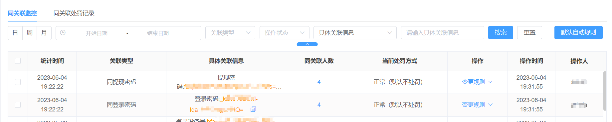
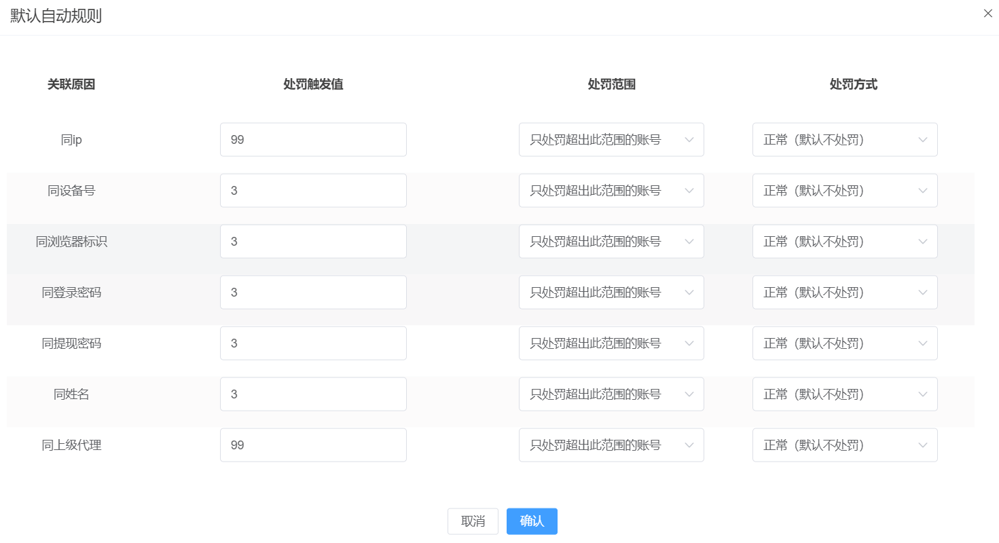
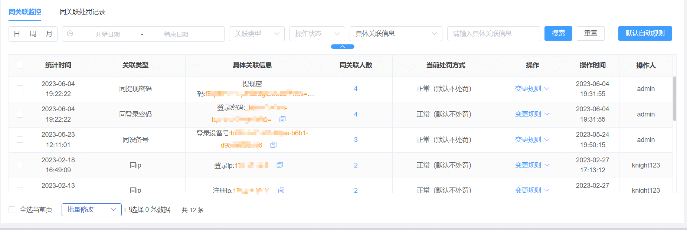
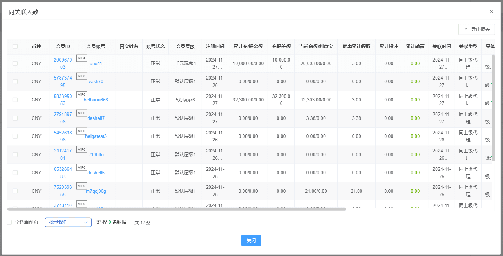
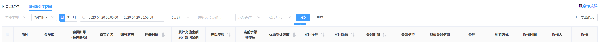

一、刷子监控
（1）功能说明：
1、同关联监控：对存在关联的会员账号进行监控，并给予自动处罚，该功能主要作用是防止短时间内大批量刷号行为。
2、同关联处罚记录：记录所有触发同关联处罚的会员账号，并展示该账号详细信息；
3、业主可针对不同的关联原因，设定处罚触发值，以及处罚范围和处罚方式；
4、该功能目前开放给站点管理员，主要针对于站点维度防刷风控；
5、该功能目前可调整以下状态（状态包括：加入黑名单、修改层级、恢复正常、禁止领取优惠、冻结、禁止进入游戏、修改标签）操作后填写备注
（2）搜索说明：可根据操作时间、关联类型、操作状态及具体关联信息进行查询（状态包括：加入黑名单、修改层级、恢复正常、禁止领取优惠、冻结、禁止进入游戏、修改标签）

（3）默认规则说明：关联账号的触发值、处罚方式、处罚范围的默认配置；

（4）同关联监控：主界面

4.1、统计时间：被统计为关联账号的时间；
4.2、关联类型：被关联的类型；
4.3、具体关联原因：当前被关联账号具体是因为什么原因被关联的，如相同IP或密码等；
4.4、同关联人数：当前被关联账号数量；
4.5、当前处罚方式：展示当前该条同关联信息的处罚方式；
4.6、操作：可对当前被关联信息进行处罚方式的变更；
4.7、操作时间：如系统自动处罚则展示系统处罚时间，如人工变更处罚方式，则记录人工变更的时间；
4.8、操作人：如系统自动处罚则展示为admin，如人工变更处罚方式则记录当前操作人账号；
（5）同关联人数：主界面

（6）同关联处罚记录：主界面

4.1、同关联处罚记录：该页面记录了所有触发了同关联处罚机制的会员账号，业主可通过操作时间、关联时间、会员账号、关联类型、操作类型及具体关联信息进行查询（类型包括：加入黑名单、修改层级、恢复正常、禁止领取优惠、冻结、禁止进入游戏、修改标签）